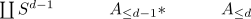
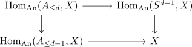

Hom into an n-connected anima
Proposition
Let $A$ be a CW Complex with cells in dimension $\leq d$ and $X$ an n-connected anima. Then $\mathrm{Hom}_{\mathrm{An}}(A,X)$ is $n-d$ connnected.
Proof
induction basis
for $A = \coprod *$, this follows from the equivalence $\mathrm{Hom}_{\mathrm{An}}(\coprod_{i \in I} *,X) \cong \prod_{i \in I} X$ and product of n-connected anima is n-connected.
induction step
Assume that $A_{\leq d}$ is the pushout

where $A_{\leq d-1}$ has only cells in dimension $\leq d-1$. Then $\mathrm{Hom}_{\mathrm{An}}(-,X)$ induces a pullback square

We know by assumption that $\mathrm{Hom}_{\mathrm{An}}(A_{\leq d-1}, X)$ is $n-d+1$ connected so it suffices to show that the map $\mathrm{Hom}_{\mathrm{An}}(A_{\leq d}, X) \rightarrow \mathrm{Hom}_{\mathrm{An}}(A_{\leq d}, X)$ is <so and so> connected. Now using pullback of an n-connected map is n-connected it suffices to show that $\mathrm{Hom}_{\mathrm{An}}(S^{d-1}, X) \rightarrow X$ is <so and so > connected.
Moreover, the fiber sequence (cf. fiber sequence of mapping anima, pointed mapping anima and target)
shows that the map is <so and so> connected since $\mathrm{Hom}_{\mathrm{An}_*}(S^{d-1},X) \simeq \Omega^{d-1} X$ is $n-d+1$ connected.